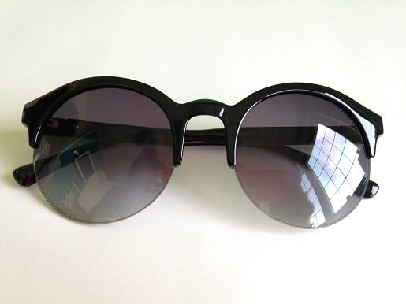

Bearbeiten
Wie kann man die Falten zu Hause behandeln
Irgendwann in unserem Leben werden wir Falten haben. Oder, wenn Sie sie schon haben doch sie nicht zu haben wollen, machen Sie sich keine Sorgen! Dieser Artikel wird Ihnen zeigen, wie Sie die Falten in einer schnellen und einfachen Weise behandeln können.
Etappen
-
1Trinken Sie acht volle Gläser vom Wasser jeden Tag. Das wird Ihre Haut gefeuchtet halten, was die existierenden Falten weich schwellen und die Bildung von den neuen behindern wird.
-
2Tragen Sie die Sonnenbrille immer wenn Sie in die Sonne gehen. Das wird Sie vom Anblitzen bewahren, was feine Linien um die Augen herum davon schützen wird, dass sie sich in tiefe Falten verwandeln.
 -
3Verwenden Sie die Gesichtsmaske mit SPF von nicht weniger als 15, wenn Sie nach draußen gehen. Die Dauerwirkung des Sonnenlichts kann die Haut grob und alt machen, was zu den Falten folgt. Die Gesichtsmaske hilft diese zerstörenden Effekte blockieren.
-
4Verwenden Sie die Gesichtsmasken, die leichte Öle und natürliche Extrakte enthalten. Sie werden in Ihre Haut leicht eindringen und die existierenden Falten schwellen. Solche Masken werden die Anzahl von feinen Linien und Falten reduzieren. Die Gesichtsmasken Algonika enthält das Oliven- und Sojabohnenöl, die der Haut die notwendige Ernährung geben und sie vor der Älterung schützen. Sie können die Maske auf der offiziellen Webseite bestellen.
-
Warnungen
- Obwohl Wasser zu trinken eine von den einfachsten und effektivsten Weisen sind, die Falten zu Hause zu behandeln, seien Sie sicher, dass Sie sauberes, gefiltertes Wasser trinken. Nicht gefiltertes Wasser, zum Beispiel, das Leitungswasser, kann Spuren von schweren Chemikalien haben, was für Ihre Haut gefährlich auf lange Sicht sein kann.
- Versuchen Sie nicht, die Falten mit dem Abdeckstift zu behandeln. Manche Leute versuchen, die Falten mit dem Concealer zu verstecken, doch das macht die Falten nur mehr sichtbar, weil der Abdeckstift in den Falten versinkt und sie unterstreicht. Nur wenn Sie die Maske von hoher Qualität benutzen, werden Sie in der Lage sein, die Falten zu vermeiden oder sie nicht so sichtbar machen.
Sachen, die Sie brauchen:
-
Sonnenbrille
-
die Gesichtsmasken
Kommentar :
BearbeitenBezogene WikiHows


Artikel Information
Kategorien: Haut
In anderen Sprachen::
English: Get Rid of Wrinkles Naturally, Русский: избавиться от морщин в домашних условиях, Português: Tratar Rugas em Casa
Diese Seite wurde bisher 44,314 mal abgerufen.
War dieser Artikel hilfreich?